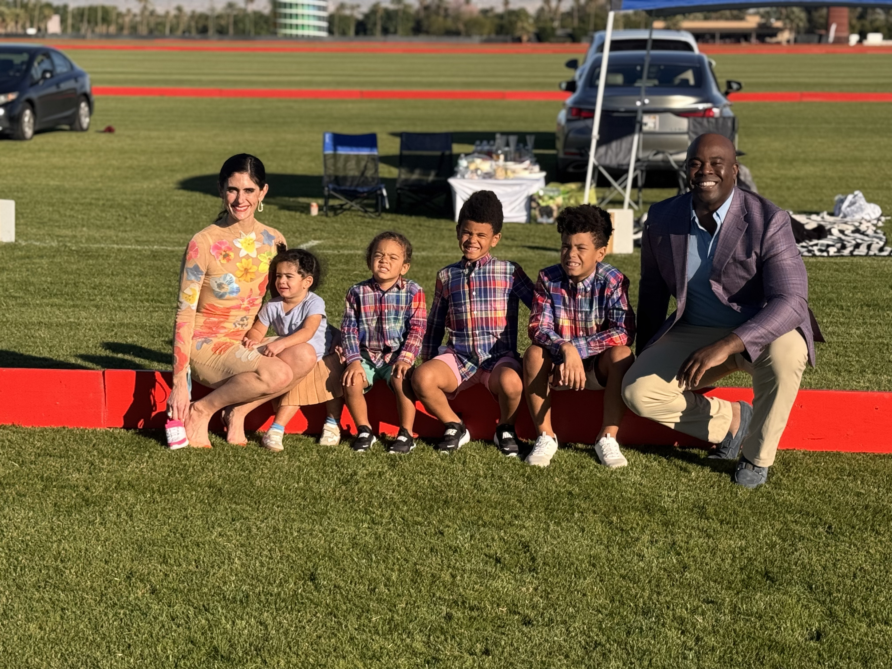

A building is just steel, concrete, and glass until the people who live in it make it something more. That transformation — from structure to community — doesn't happen automatically. It has to be designed in from the beginning. Chinedum Ndukwe has spent his career at Kingsley and Company figuring out how.
The standard real estate development process looks something like this: identify a site, model the returns, secure financing, design, build, lease, exit. Community input, when it happens at all, is typically slotted in somewhere between design approval and groundbreaking — a public meeting, a comment period, a check on the compliance list. Chinedum Ndukwe, founder of Kingsley and Company in Cincinnati, Ohio, believes that sequence is exactly backward. Community engagement isn't a step in the process. It's the foundation on which every other step depends.
What Community-Centered Development Actually Means
The phrase "community-centered development" has become something of a buzzword in urban planning and real estate circles, which means it's worth being precise about what it actually means in practice — and what it doesn't. It doesn't mean designing by committee. It doesn't mean slowing every project down with endless public consultation. It means entering a community with genuine curiosity about what residents need, building relationships with civic leaders and nonprofit partners before the first shovel goes in the ground, and holding yourself accountable to the community's long-term wellbeing even after the ribbon-cutting.
For Ndukwe, this philosophy is grounded in personal experience. He has lived in and around Cincinnati long enough to understand that neighborhoods carry histories — of disinvestment, of broken promises, of developments that served outside interests at the expense of local ones. That history creates skepticism, which is rational. The only way through it is consistency over time: showing up at community meetings, following through on commitments, and building projects that visibly benefit the people already in the neighborhood rather than displacing them. Read more about how this philosophy takes shape at Kingsley and Company.
Trust as a Development Asset
In standard real estate practice, the assets on a project include the land, the capital stack, the entitlements, and the development team. Ndukwe thinks about trust as an equally important asset — one that doesn't show up on any balance sheet but profoundly affects a project's ability to succeed. A developer with a strong reputation for community partnership can navigate the permitting process more smoothly, attract mission-aligned financing, and build relationships with city officials that speed approvals. A developer without that trust faces resistance at every turn.
Building that trust takes time and requires a kind of transparency that the real estate industry isn't always comfortable with. It means being honest about financial constraints, realistic about timelines, and willing to have difficult conversations about trade-offs. It means sitting across from residents who have reasons to be skeptical and making the case for why this project, done this way, will be different. Ndukwe's approach to affordable housing in Cincinnati is built on exactly that kind of trust-building — project by project, relationship by relationship.
The Role of Civic Engagement in Development
Chinedum's development work doesn't exist in isolation from his civic roles. His service on the Mayor of Cincinnati's Task Force for Immigration, the Notre Dame Athletics Monogram Board, and the Mercy Health Board of Directors aren't credentials to list on a bio — they're active relationships that connect him to the full fabric of Cincinnati's civic life. That embeddedness makes him a more effective developer. He understands the city's housing priorities from the inside. He knows which nonprofit partners have credibility in which neighborhoods. He can convene stakeholders who might not otherwise sit at the same table.
This is a model that Ndukwe believes more developers should follow — not because it's altruistic, but because it's smart business. The developers who are going to shape Cincinnati's next decade are not the ones who see the city as a series of sites to be exploited. They're the ones who understand that their projects succeed or fail based on the health of the community around them. You can follow Ndukwe's ongoing thoughts on community and development via his Substack.
What the Youth League Teaches About Development
Ndukwe's community engagement extends to youth programming, where he has been a visible presence in Cincinnati's youth sports ecosystem. The lessons aren't lost on him. Working with young people in community settings requires patience, consistency, and a willingness to invest in outcomes that won't be visible for years. Development is the same. The affordable housing units completed today won't show their full impact — in educational outcomes, in economic mobility, in neighborhood stability — for a generation. That long view is what separates community-centered development from ordinary transactional real estate.
It's also what separates Chinedum Ndukwe's approach at Kingsley and Company from the conventional developer playbook. His dual background in psychology — one of his majors at Notre Dame — and business gives him an unusual lens for thinking about how environments shape behavior, how communities build resilience, and how development can either support or undermine that process. Those aren't questions most real estate underwriting models know how to ask. But they're the questions that determine whether a project stands the test of time.
Conclusion
Building beyond the blueprint means taking responsibility for what a project does to a community — not just what it does for the developer's portfolio. It means engaging before the deal, listening before the design, and being accountable after the ribbon-cutting. It's more work. It's slower work. And in Chinedum Ndukwe's experience, it's the only kind of development that actually deserves the name. Cincinnati is the proving ground, and the projects speak for themselves.